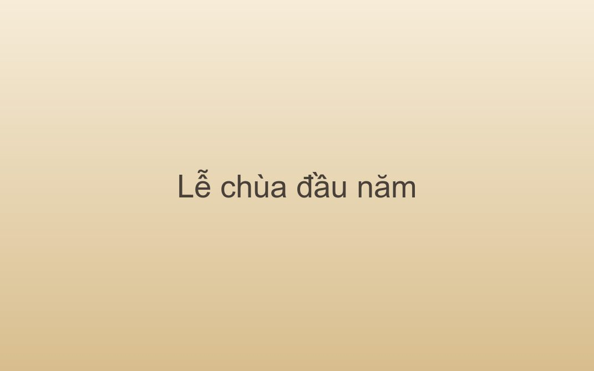

Lễ chùa đầu năm
Ý nghĩa và những lưu ý khi đi lễ chùa đầu năm để đón một năm mới an lành.

Đi lễ chùa những ngày đầu năm là dịp để tĩnh tâm, nhìn lại một năm đã qua và gửi gắm mong ước cho năm mới. Điều được cầu thường không phải tài lộc, mà là sức khỏe và sự bình an cho gia đình.
Cảnh báo. Những ngày đầu năm chùa rất đông. Giữ kỹ tư trang và để ý trẻ nhỏ.